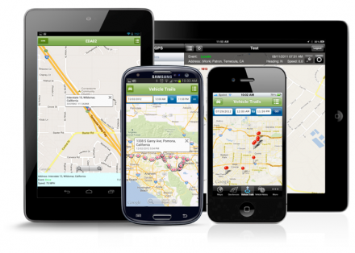
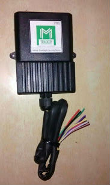
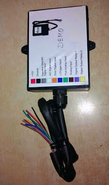

M Tracker
YOUR BELIEFS, OUR SERVICES
| |


 1
1 2
2 3
3 4
4 5
5 6
6Our Products and Services
GPS Vehicle Tracking for Fleets
|  | GPS Vehicle Tracking that goes way beyond just tracking. Track all of your vehicles in your computer or any mobile device at any time, see historical locations with detailed information of all activities, and much much more. With our M Tracker Fleet solutions you will experience GPS Vehicle Tracking like never before. We have a long list of easy to use powerful features that will give you total control and monitoring capabilities of your fleet. |
Our Tracking Devices
M Track Logistics gives you the framework for the management of your vehicles, time and company resources. Streamline your operation with the most complete set of tools provided by M Tracker. Real-time transportation management paired with Mobile's dispatching automated routing and scheduling optimization features gives you the extra help you need to maximize productivity while reducing costs.
|  |
Monitor your entire operations in one single screens. |
|  |
Create, control and manage routes in real-time. |